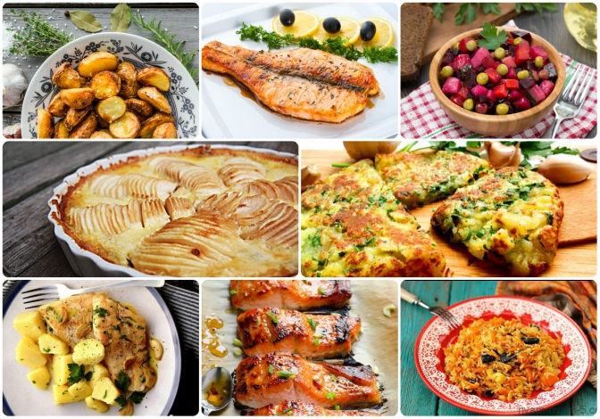
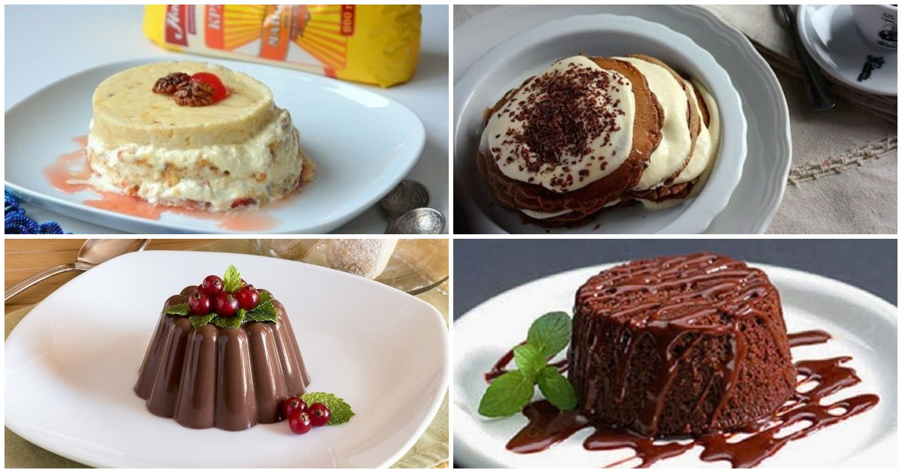

Страви традиційно поділяють згідно з етапами споживання їжі, на «перші страви», «другі страви» та «солодкі страви».
Перші страви (супи) сприяють збудженню апетиту й активізують діяльність травних залоз, що пояснюється наявністю у більшості супів екстрактивних речовин. Перші страви, приготовані з різних овочів, забезпечують організм вітамінами та мінеральними речовинами, у складі густої частини супів є харчові волокна, які стабілізують систему травлення.
Перші страви низькокалорійні, що вигідно відрізняє їх від «других страв», оскільки організм витрачає однакову кількість енергії на їх перетравлення. Щоденне або, принаймні, часте вживання рідких страв просто необхідно. Перші страви складаються з рідкої та густої основи.
Друга страва, більшість складу якої — сухий продукт (для прикладу: гречана каша, м'ясо, макарони…).
Другі страви подають в гарячому вигляді при температурі 65С, соуси до них — при 75C, температура порційних страв досягає 80-90С.
Солодкі страви часто називають десертом. Для їх приготування використовують фрукти та ягоди, фруктово-ягідні сиропи, екстракти, соки. В деякі страви входять вершки, сметана, яйця, олія, крупи, шоколад, морозиво. (для прикладу: торт, чай).
 На головну